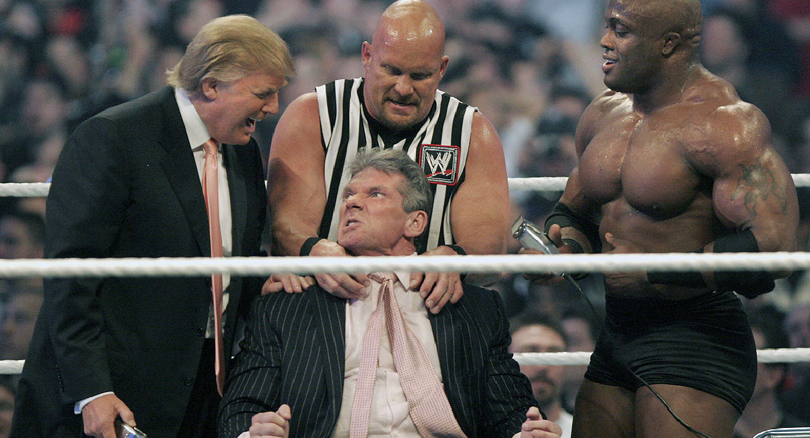

El uso politico del Kayfabe
Antes de vencer a Hillary Clinton y convertirse en el presidente de los Estados Unidos, el multimillonario Donald Trump midió su ego en el cuadrilátero y salió igualmente victorioso. Miembro del Salón de la Fama del Wrestling desde 2013, el presidente suele apoyarse en las técnicas de la lucha libre profesional para alcanzar sus objetivos políticos

Durante la campaña electoral que lo ocuparía como presidente, Trump se hizo muy famoso primero por sus prejuicios contra los mexicanos y después por sus salidas de tono sexistas. Pues bien, puede que la verborrea racista y machista de Trump hoy nos escandalice, pero lo cierto es que los mismos prejuicios que abundan en su discurso político llevan 30 años llegando a los televisores americanos a través de la WWE de McMahon.